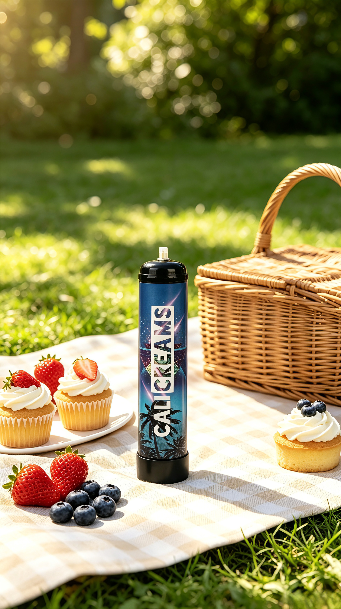
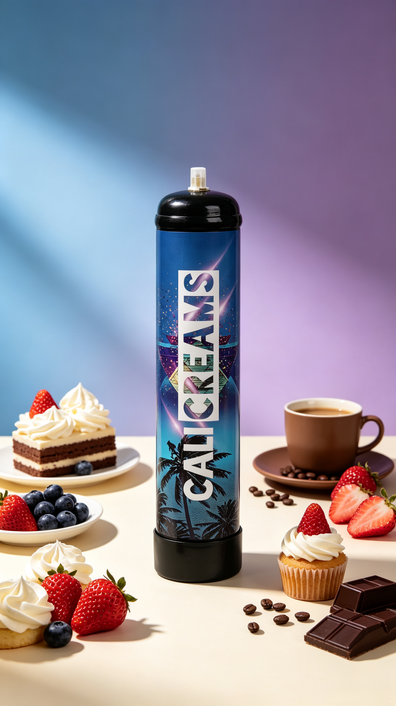
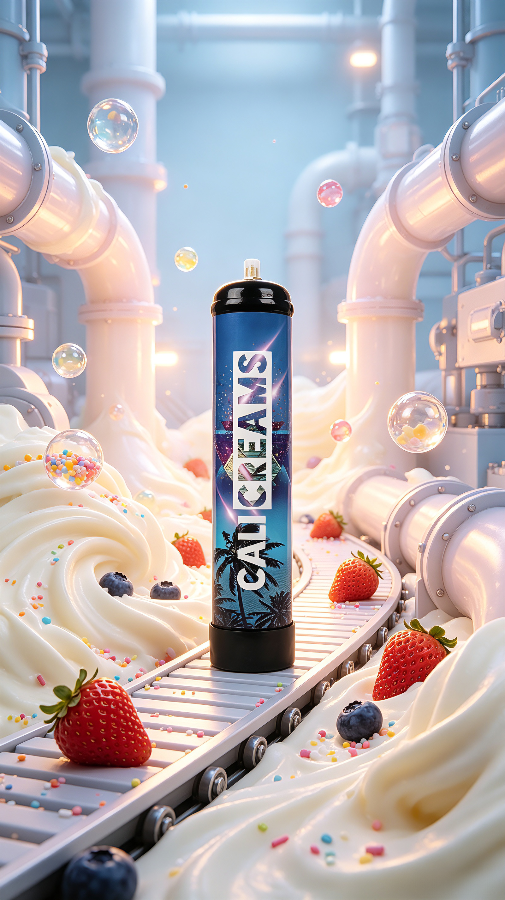
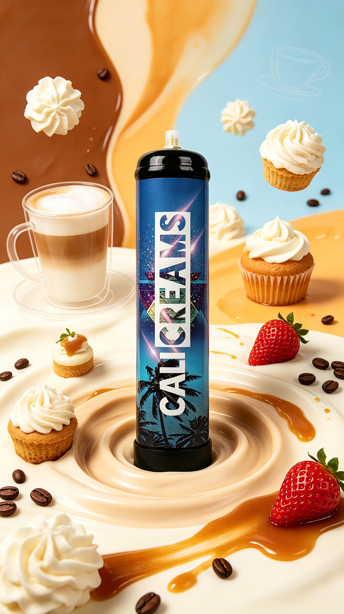

Food-Grade Quality
Clean, reliable culinary supply
Premium Food-Grade Nitrous Oxide
For culinary & beverage professionals
Premium food-grade nitrous oxide designed for chefs, bartenders, pastry professionals and culinary creators. From perfectly textured whipped cream to innovative foams, infusions and culinary creations, Cream Cali brings consistency, performance and precision to every application.
Clean, reliable culinary supply
Repeatable professional results
Clear guidance and product care
Cream Cali Promotion

Introduction to Cream Cali
Welcome to Cream Cali, a premium food-grade nitrous oxide brand created for modern culinary and beverage professionals.
We believe great results begin with quality, consistency and control. That is why Cream Cali is designed to deliver a clean, reliable and consistent supply of food-grade N₂O for professional culinary applications.
Whether you're preparing delicate whipped cream, creating elegant dessert foams, experimenting with culinary infusions or developing innovative beverage creations, Cream Cali gives professionals the precision they need to bring their ideas to life.
Made for professionals. Designed for consistency. Created for culinary excellence.


Flavor Section
Cream Cali helps professionals shape flavor-forward desserts, foams and plated creations. Here are a few visual flavor inspirations for menus, tastings and signature presentations.

Silky whipped textures and warm caramel finishes for plated desserts and café menus.

Rich cocoa profiles elevated with clean aeration for mousse layers, toppings and foams.

Bright fruit notes paired with smooth, stable cream textures for premium dessert service.

Deep, refined flavor presentation for pastry kitchens, tasting menus and cocktail garnish work.
Why Cream Cali?
In professional kitchens and bars, consistency matters. Every dessert, cocktail and culinary creation deserves the same level of quality from the first serving to the last.
Intended for legitimate culinary and beverage applications where food-grade nitrous oxide is required.
Reliable gas flow helps professionals achieve repeatable results across culinary applications.
Built for restaurants, cafés, pastry kitchens, bars, caterers and demanding culinary environments.
From manufacturing to packaging, product integrity remains central to the Cream Cali experience.
Suitable for whipped cream, foams, culinary infusions and other compatible food and beverage preparations.
Clear information, responsible handling and responsive customer support are part of the offering.
Why Choose Cream Cali?
Cream Cali is positioned for culinary and beverage applications where food-grade nitrous oxide is appropriate.
A dependable gas supply allows professionals to work with greater consistency and control.
Designed to support restaurants, bakeries, cafés, bars and catering operations.
From whipped cream and dessert foams to beverage applications, Cream Cali gives professionals room to create.
We encourage responsible handling, storage, transportation and recycling of every cylinder.
Customers should always purchase through authorized channels and verify product information before use.
How Cream Cali Works
Nitrous oxide has a unique ability to dissolve into certain food preparations under pressure. When used in a compatible whipped-cream dispenser or approved culinary system, the gas is introduced into the preparation and remains largely dissolved while contained.
When the dispenser is activated, the pressure drops rapidly. The dissolved N₂O comes out of solution and expands, creating numerous tiny gas bubbles throughout the preparation.
The result can be a light, airy and stable foam depending on the recipe, ingredients, temperature, equipment and technique.
In simple terms
This is what makes N₂O particularly useful for creating whipped cream and culinary foams.
Gastronomy
Nitrous oxide is a valuable tool in modern gastronomy because of its ability to dissolve into suitable preparations and create aerated textures.
N₂O dissolves into cream under pressure and expands on dispensing to create a light, aerated texture.
Compatible recipes and equipment help chefs create refined foams for texture and presentation.
Cream Cali can be incorporated into professional dessert preparation where aeration and texture matter.
Under controlled conditions and with compatible equipment, N₂O can assist in infused preparations.
Suitable for culinary foams and aerated textures in beverage and cocktail settings.
Important: Always follow the instructions provided with the specific dispenser or equipment and use only food-grade N₂O intended for the relevant application.
Safety Guidelines
Cream Cali products containing pressurized nitrous oxide must be handled responsibly and strictly according to product instructions and applicable laws.
Cream Cali N₂O is intended only for legitimate culinary and food applications and must never be intentionally inhaled.
Only use cylinders with equipment specifically designed and approved for the relevant product and pressure requirements.
Do not expose cylinders to flames, direct heat or temperatures beyond the specified storage limits.
Never puncture, drill, open, modify or tamper with a cylinder or its valve.
Do not drop, drag, roll or physically damage cylinders. Keep valves and protective components intact.
Store in a cool, dry and adequately ventilated location away from heat, flames and ignition sources.
Cylinders and associated equipment must be kept inaccessible to minors and unauthorized users.
Secure cylinders during transportation and follow all applicable dangerous-goods requirements.
Always follow the operating instructions and pressure limits provided with your dispenser or compatible equipment. Refer to the product label, safety documentation and local regulations.
Littering & Recycling
Responsible disposal is part of responsible product use. Cylinders should never be littered, abandoned or disposed of carelessly.
Once a cylinder has been completely emptied according to the manufacturer’s approved procedure, it should be handled in accordance with local recycling and waste-disposal regulations.
Ensure the cylinder is completely empty using the appropriate approved method.
Confirm that no pressure remains before disposal.
Take the empty cylinder to an appropriate metal recycling or designated collection facility.
Do not cut, crush, drill, burn or otherwise modify the cylinder.
Product
Premium food-grade N₂O developed for culinary and beverage professionals who demand dependable performance and consistency.
Designed for legitimate culinary and beverage applications with consistent gas delivery and clear product identification.
For culinary professionals looking for dependable performance and consistent results.
View ProductBuilt for higher-volume operations where consistent output and operational efficiency matter.
Request DetailsFAQ
Cream Cali is a premium food-grade nitrous oxide brand designed for legitimate culinary and beverage applications.
Nitrous oxide, commonly represented as N₂O, is a gas used in legitimate applications including as a food additive and propellant in suitable culinary equipment.
It can be used in appropriate culinary applications such as whipped cream and certain foams and infusions when used with compatible equipment and according to the manufacturer’s instructions.
N₂O dissolves into the cream under pressure inside a compatible dispenser. When the cream is dispensed, the pressure falls and the dissolved gas expands, creating tiny bubbles that produce an aerated texture.
Where the product and equipment are specifically intended for the application, N₂O can be used by culinary and beverage professionals for foams and certain infusion techniques.
Empty cylinders should be disposed of through appropriate local recycling or waste-disposal channels. Recycling acceptance varies by location.
No. Do not attempt to refill, modify, tamper with, heat or expose cylinders to direct flame or unauthorized heating.
No. Cream Cali is intended for legitimate culinary and beverage use. Nitrous oxide must never be intentionally inhaled.
Purchase only through authorized distributors or sales channels and check packaging, product identification and authenticity features before use.
About Us
Cream Cali was created with one simple idea: professional ingredients deserve professional standards. The modern culinary world is constantly evolving, and we want to be part of that evolution.
Our goal is not simply to supply a cylinder. Our goal is to provide a dependable tool that helps culinary professionals create better experiences from the first preparation to the final presentation.
We believe quality should be consistent from product to product.
Professional kitchens need predictable performance.
We support modern culinary techniques and creative applications.
Safe handling, responsible use and proper disposal are fundamental.
Long-term relationships are built through transparency and reliable service.
For Chefs
From classic whipped cream to contemporary foams, the possibilities begin with a quality product and the right technique.
Create without limits.
For Bartenders
Texture, aroma, presentation and mouthfeel can transform a drink into an experience with compatible culinary applications.
Shake less. Create more.
For Distributors
We are looking for reliable distributors and business partners who understand the professional culinary and beverage market.
Responsible Use
Cream Cali products are intended strictly for legitimate culinary and beverage applications. We do not support misuse, inhalation or intentional recreational use of nitrous oxide.